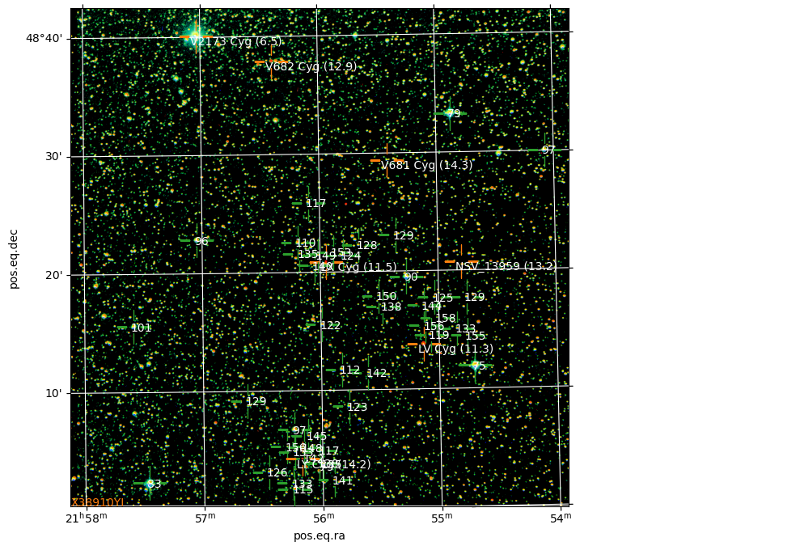
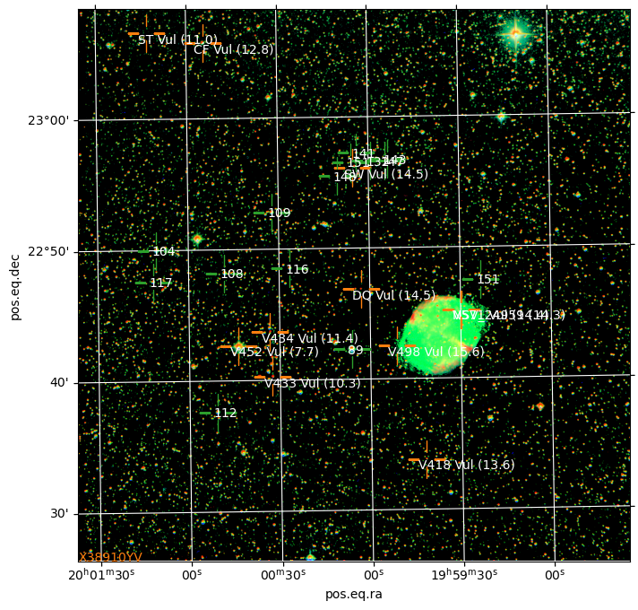

solver = Solver()process
Image processing submodule.
OSO=Telescope(config='~/.config/telescope.ini')Job = namedtuple('Job', 'jid rid done')DB = SqliteDict('telescope.sqlite', autocommit=True)
VSdb = SqliteDict('vstars.sqlite', autocommit=True)if not ('done' in DB):
DB['done'] = set()
if not ('problematic' in DB):
DB['problematic'] = set()
done = DB['done']
problematic = DB['problematic']# VSdb['BE Vul']for vs in VSdb.items():
if 'seq' in vs[1] and vs[1]['seq'] and vs[1]['seq'][0] and vs[1]['seq'][1]:
print(vs[0], len(vs[1]['jobs']) )
else :
# print(vs)
passplot_sequence
plot_sequence (vs)
process_job
process_job (jid, reprocess=False, cls=True, layer=None)
analyse_job
analyse_job (jid, rid=None, reprocess=False)
reqlst=OSO.get_user_requests(sort='completion')
print(f'Number of users requests: {len(reqlst)}')
complete = [rq for rq in sorted(reqlst, key=lambda r: int(r['requesttime']), reverse=True)
if Telescope.REQUESTSTATUS_TEXTS[int(rq['status'])]=='Complete']
print('Completed:', len(complete))Number of users requests: 1849
Completed: 1821for r in complete[:5]:
j = OSO.get_request(int(r['id']))
o = OSO.get_job(int(j['jid']))
f = OSO.get_obs(o, verbose=True)
analyse_job(o['jid'], reprocess=True)
plt.figure(figsize=(8,8))
process_job(o['jid'], reprocess=True, cls=False)
plt.show()J422672:R771144 (LX Cyg) 11 November 2024 00:25:33 UTC
Filters: R V B
Solving for EEAD1B8F
solve-field -p -l 30 -O -L 1 -H 2 -u app -3 328.987500 -4 48.347778 -5 2 /tmp/field-solverje1asjpl/tmp5g2rwh0v.fitsWARNING: FITSFixedWarning: EPOCH = 'REAL'
a floating-point value was expected. [astropy.wcs.wcs]
WARNING: FITSFixedWarning: RADECSYS= 'ICRS'
the RADECSYS keyword is deprecated, use RADESYSa. [astropy.wcs.wcs]
WARNING: FITSFixedWarning: 'datfix' made the change 'Set MJD-OBS to 60625.012182 from DATE-OBS'. [astropy.wcs.wcs]LV Cyg seq:X38910YH (41)
LX Cyg seq:X38910YI (44)
LY Cyg seq:X38910YJ (40)
V681 Cyg seq:X38910YK (32)
V682 Cyg seq:X38910YL (13)
V2173 Cyg seq:X38910YM (9)
V2657 Cyg seq:X38910YN (17)
NSV_13959
NSV_25782
jid 422672: (LX Cyg)
11 November 2024 00:25:33 UTC
Filters: ('R', 'V', 'B')
Getting EEAD1B8F from cacheWARNING: FITSFixedWarning: EPOCH = 'REAL'
a floating-point value was expected. [astropy.wcs.wcs]
WARNING: FITSFixedWarning: RADECSYS= 'ICRS'
the RADECSYS keyword is deprecated, use RADESYSa. [astropy.wcs.wcs]
WARNING: FITSFixedWarning: 'datfix' made the change 'Set MJD-OBS to 60625.012182 from DATE-OBS'. [astropy.wcs.wcs] GCVS n_GCVS RAJ2000 DEJ2000 ... SpType Exists VarName Simbad
...
--------- ------ ----------- ----------- ... ----------- ------ --------- ------
LV Cyg x 21 55 08.02 +48 13 48.2 ... M7 LV Cyg Simbad
LX Cyg * 21 55 57.07 +48 20 50.9 ... SC3e-S5,5e: LX Cyg Simbad
LY Cyg x 21 56 10.40 +48 04 13.3 ... M5 LY Cyg Simbad
V0681 Cyg x 21 55 25.24 +48 29 24.8 ... V0681 Cyg Simbad
V0682 Cyg x 21 56 23.65 +48 37 54.6 ... M6 V0682 Cyg Simbad
V2173 Cyg x 21 57 02.23 +48 40 06.8 ... V2173 Cyg Simbad
V2657 Cyg x 21 53 38.07 +48 24 13.4 ... V2657 Cyg Simbad
['000-BCP-557', '75', '21:54:42.03', 328.67510986, '48:11:55.4', 48.19872284, '7.783 (0.080)', '7.501 (0.072)', '0.282 (0.108)', '—']
['000-BCP-564', '79', '21:54:52.56', 328.71899414, '48:33:16.8', 48.55466843, '7.943 (0.073)', '7.909 (0.064)', '0.034 (0.097)', '—']
['000-BCP-669', '83', '21:57:27.76', 329.36566162, '48:02:20.0', 48.03889084, '8.284 (0.071)', '8.313 (0.062)', '-0.029 (0.094)', '—']
['000-BCP-593', '90', '21:55:16.26', 328.81774902, '48:19:31.1', 48.32530594, '9.176 (0.074)', '8.970 (0.064)', '0.206 (0.098)', '—']
['000-BCP-664', '96', '21:57:02.85', 329.26187134, '48:22:49.9', 48.3805275, '10.445 (0.082)', '9.636 (0.067)', '0.809 (0.106)', '—']
['000-BCP-534', '97', '21:54:04.73', 328.51971436, '48:30:01.5', 48.5004158, '10.152 (0.082)', '9.749 (0.066)', '0.403 (0.105)', '—']
['000-BCP-646', '97', '21:56:14.18', 329.05908203, '48:06:42.4', 48.11177826, '10.921 (0.095)', '9.746 (0.069)', '1.175 (0.117)', '—']
['000-BCP-672', '101', '21:57:35.27', 329.39697266, '48:15:33.8', 48.25938797, '10.608 (0.084)', '10.133 (0.058)', '0.475 (0.102)', '—']
['000-BCP-642', '110', '21:56:11.29', 329.04702759, '48:22:32.1', 48.37558365, '12.172 (0.227)', '10.964 (0.062)', '1.208 (0.235)', '—']
['000-BCP-617', '112', '21:55:49.79', 328.9574585, '48:11:44.9', 48.1958046, '11.714 (0.149)', '11.178 (0.071)', '0.536 (0.165)', '—']
['000-BCP-647', '115', '21:56:14.46', 329.0602417, '48:01:40.0', 48.02777863, '12.453 (0.086)', '11.522 (0.079)', '0.931 (0.117)', '10.973 (0.088)']
['000-BCP-630', '117', '21:56:01.22', 329.00509644, '48:04:55.0', 48.08194351, '12.663 (0.096)', '11.664 (0.077)', '0.999 (0.123)', '11.090 (0.088)']
['000-BCP-635', '117', '21:56:05.77', 329.02404785, '48:25:53.9', 48.43164062, '11.754 (0.193)', '11.680 (0.071)', '0.074 (0.206)', '—']
['000-BCP-578', '119', '21:55:04.27', 328.76779175, '48:14:34.3', 48.2428627, '12.682 (0.335)', '11.860 (0.164)', '0.822 (0.373)', '—']
['000-BCP-626', '122', '21:55:59.45', 328.99771118, '48:15:33.9', 48.25941849, '12.526 (0.325)', '12.215 (0.183)', '0.311 (0.373)', '—']
['000-BCP-613', '123', '21:55:46.36', 328.94317627, '48:08:37.0', 48.14361191, '12.540 (0.018)', '12.287 (—)', '0.253 (0.018)', '12.148 (0.004)']
['000-BCP-616', '124', '21:55:48.30', 328.95126343, '48:21:23.7', 48.35658264, '—', '12.441 (0.117)', '—', '—']
['000-BCP-576', '125', '21:55:02.07', 328.75863647, '48:17:43.5', 48.29541779, '—', '12.518 (0.089)', '—', '—']
['000-BCP-653', '126', '21:56:27.21', 329.1133728, '48:03:08.5', 48.05236053, '13.091 (0.006)', '12.554 (—)', '0.537 (0.006)', '12.236 (0.004)']
['000-BCP-611', '128', '21:55:40.35', 328.91812134, '48:22:15.2', 48.37088776, '—', '12.777 (0.070)', '—', '—']
['000-BCP-560', '129', '21:54:45.69', 328.69036865, '48:17:43.2', 48.29533386, '—', '12.924 (0.125)', '—', '—']
['000-BCP-599', '129', '21:55:21.53', 328.83972168, '48:23:04.2', 48.3844986, '—', '12.909 (0.221)', '—', '—']
['000-BCP-657', '129', '21:56:37.73', 329.15719604, '48:09:12.4', 48.15344238, '13.474 (0.013)', '12.889 (0.006)', '0.585 (0.014)', '12.509 (0.006)']
['000-BCP-562', '133', '21:54:50.74', 328.71142578, '48:15:04.0', 48.25111008, '—', '13.289 (0.159)', '—', '—']
['000-BCP-648', '133', '21:56:14.88', 329.06201172, '48:02:11.7', 48.03658295, '13.543 (0.006)', '13.261 (—)', '0.282 (0.006)', '13.149 (0.010)']
['000-BCP-627', '135', '21:55:59.71', 328.9987793, '48:03:47.3', 48.06314087, '13.857 (0.002)', '13.526 (—)', '0.331 (0.002)', '13.357 (0.008)']
['000-BCP-641', '135', '21:56:10.44', 329.04348755, '48:21:35.0', 48.35972214, '—', '13.513 (0.063)', '—', '—']
['000-BCP-604', '138', '21:55:28.43', 328.86846924, '48:17:01.4', 48.28372192, '—', '13.758 (—)', '—', '—']
['000-BCP-631', '138', '21:56:01.64', 329.00683594, '48:03:52.0', 48.0644455, '14.501 (—)', '13.762 (—)', '0.739 (—)', '13.322 (0.004)']
['000-BCP-632', '140', '21:56:02.92', 329.01217651, '48:20:34.2', 48.34283447, '—', '13.978 (0.066)', '—', '—']
['000-BCP-622', '141', '21:55:54.33', 328.97637939, '48:02:24.2', 48.04005432, '15.153 (0.010)', '14.111 (0.008)', '1.042 (0.013)', '13.524 (0.010)']
['000-BCP-638', '142', '21:56:09.03', 329.03762817, '48:04:15.5', 48.07097244, '16.061 (0.029)', '14.153 (0.029)', '1.908 (0.041)', '12.383 (0.039)']
['000-BJS-541', '142', '21:55:36.31', 328.90130615, '48:11:26.3', 48.1906395, '14.868 (0.030)', '14.198 (0.025)', '0.670 (0.039)', '13.791 (0.039)']
['000-BJS-542', '144', '21:55:07.54', 328.78140259, '48:17:03.8', 48.2843895, '14.925 (0.068)', '14.370 (0.014)', '0.555 (0.069)', '14.022 (0.030)']
['000-BCP-636', '145', '21:56:07.24', 329.03018188, '48:06:10.2', 48.10283279, '15.634 (0.006)', '14.545 (0.006)', '1.089 (0.008)', '13.922 (0.006)']
['000-BCP-639', '148', '21:56:09.49', 329.03955078, '48:05:12.3', 48.08675003, '15.624 (0.006)', '14.850 (0.006)', '0.774 (0.008)', '14.398 (0.007)']
['000-BCP-629', '149', '21:56:01.15', 329.00479126, '48:21:25.9', 48.35719299, '—', '14.937 (0.079)', '—', '—']
['000-BJS-543', '150', '21:55:30.62', 328.87759399, '48:17:55.6', 48.29877853, '15.609 (0.024)', '14.962 (0.011)', '0.647 (0.026)', '14.560 (0.029)']
['000-BCP-620', '153', '21:55:53.22', 328.97174072, '48:21:39.9', 48.36108398, '—', '15.299 (0.088)', '—', '—']
['000-BCP-645', '153', '21:56:14.05', 329.05853271, '48:04:49.5', 48.08041763, '15.956 (0.004)', '15.297 (—)', '0.659 (0.004)', '14.892 (0.008)']
['000-BCP-561', '155', '21:54:45.80', 328.69082642, '48:14:28.3', 48.24119568, '—', '15.457 (—)', '—', '—']
['000-BCP-581', '156', '21:55:06.72', 328.77801514, '48:15:20.8', 48.25577927, '—', '15.585 (—)', '—', '—']
['000-BCP-649', '156', '21:56:17.88', 329.07449341, '48:05:16.5', 48.08791733, '16.239 (0.007)', '15.561 (0.006)', '0.678 (0.009)', '15.133 (0.020)']
['000-BCP-575', '158', '21:55:00.89', 328.75372314, '48:16:00.3', 48.26675034, '—', '15.789 (—)', '—', '—']
f_NSV NSV u_NSV n_NSV RAJ2000 DEJ2000 VarType magMax SpType VarName
mag
----- ----- ----- ----- ---------- --------- ------- ------ ------ -------
13959 - * 21 54 48.4 +48 20 43 CST 13.20 K5
25782 * 21 52 47.8 +48 01 21 9.63 B1/2V 
<Figure size 640x480 with 0 Axes><Figure size 640x480 with 0 Axes>J422671:R771143 (EQ Lyr) 10 November 2024 20:24:07 UTC
Filters: R V B
Solving for 3371DF4E
solve-field -p -l 30 -O -L 1 -H 2 -u app -3 289.758333 -4 41.109444 -5 2 /tmp/field-solver7o6os7or/tmp_kdmm45h.fitsWARNING: FITSFixedWarning: EPOCH = 'REAL'
a floating-point value was expected. [astropy.wcs.wcs]
WARNING: FITSFixedWarning: RADECSYS= 'ICRS'
the RADECSYS keyword is deprecated, use RADESYSa. [astropy.wcs.wcs]
WARNING: FITSFixedWarning: 'datfix' made the change 'Set MJD-OBS to 60624.844532 from DATE-OBS'. [astropy.wcs.wcs]EQ Lyr seq:X38910YP (9)
V476 Lyr seq:X38910YQ (3)
V588 Lyr seq:X38910YR (8)
jid 422671: (EQ Lyr)
10 November 2024 20:24:07 UTC
Filters: ('R', 'V', 'B')
Getting 3371DF4E from cacheWARNING: FITSFixedWarning: EPOCH = 'REAL'
a floating-point value was expected. [astropy.wcs.wcs]
WARNING: FITSFixedWarning: RADECSYS= 'ICRS'
the RADECSYS keyword is deprecated, use RADESYSa. [astropy.wcs.wcs]
WARNING: FITSFixedWarning: 'datfix' made the change 'Set MJD-OBS to 60624.844532 from DATE-OBS'. [astropy.wcs.wcs] GCVS n_GCVS RAJ2000 DEJ2000 ... SpType Exists VarName Simbad
...
--------- ------ ----------- ----------- ... ------ ------ --------- ------
EQ Lyr x 19 19 02.63 +41 06 34.5 ... EQ Lyr Simbad
V0476 Lyr x 19 19 49.83 +40 47 08.2 ... V0476 Lyr Simbad
V0588 Lyr x 19 19 55.00 +40 52 40.0 ... V0588 Lyr Simbad
['000-BKK-100', '107', '19:19:08.67', 289.78613281, '41:06:39.6', 41.11100006, '12.415 (0.079)', '10.675 (0.053)', '1.740 (0.095)', '9.820 (0.106)']
['000-BKK-101', '110', '19:18:28.61', 289.61920166, '41:10:29.4', 41.17483521, '11.797 (0.032)', '10.988 (0.017)', '0.809 (0.036)', '10.571 (0.060)']
['000-BKK-102', '114', '19:19:19.21', 289.83004761, '41:12:18.0', 41.20500183, '12.042 (0.036)', '11.412 (0.024)', '0.630 (0.043)', '11.032 (0.027)']
['000-BKK-103', '118', '19:19:06.51', 289.77713013, '41:16:06.3', 41.26841736, '12.359 (0.050)', '11.805 (0.030)', '0.554 (0.058)', '11.419 (0.073)']
['000-BKK-104', '121', '19:18:51.66', 289.71524048, '41:10:57.9', 41.1827507, '12.772 (0.058)', '12.123 (0.036)', '0.649 (0.068)', '11.743 (0.046)']
['000-BKK-105', '124', '19:19:06.24', 289.77600098, '41:08:55.7', 41.14880371, '13.117 (0.041)', '12.398 (0.026)', '0.719 (0.049)', '12.045 (0.029)']
['000-BKK-106', '131', '19:18:43.56', 289.68148804, '41:06:11.6', 41.10322189, '13.759 (0.049)', '13.098 (0.029)', '0.661 (0.057)', '12.805 (0.058)']
['000-BKK-107', '138', '19:19:05.88', 289.77450562, '41:02:18.5', 41.03847122, '14.621 (0.043)', '13.836 (0.025)', '0.785 (0.050)', '13.428 (0.142)']
['000-BKK-108', '142', '19:19:00.07', 289.75030518, '41:02:45.0', 41.04583359, '14.850 (0.049)', '14.157 (0.026)', '0.693 (0.055)', '13.816 (0.134)']<Figure size 640x480 with 0 Axes><Figure size 640x480 with 0 Axes>J422670:R771142 (DQ Vul) 9 November 2024 22:26:20 UTC
Filters: R V B
Solving for 6CA592A5
solve-field -p -l 30 -O -L 1 -H 2 -u app -3 300.012500 -4 22.780833 -5 2 /tmp/field-solvershevusa7/tmply0e6nzj.fitsWARNING: FITSFixedWarning: EPOCH = 'REAL'
a floating-point value was expected. [astropy.wcs.wcs]
WARNING: FITSFixedWarning: RADECSYS= 'ICRS'
the RADECSYS keyword is deprecated, use RADESYSa. [astropy.wcs.wcs]
WARNING: FITSFixedWarning: 'datfix' made the change 'Set MJD-OBS to 60623.929621 from DATE-OBS'. [astropy.wcs.wcs]ST Vul seq:X38910YS (19)
SW Vul seq:X38910YT (15)
CF Vul seq:X38910YU (18)
DQ Vul seq:X38910YV (14)
V418 Vul seq:X38910YW (4)
V433 Vul seq:X38910YX (14)
V434 Vul seq:X38910YY (14)
V452 Vul seq:X38910YZ (14)
V498 Vul seq:X38910ZA (14)
V571 Vul seq:X38910ZB (11)
NSV_24959
jid 422670: (DQ Vul)
9 November 2024 22:26:20 UTC
Filters: ('R', 'V', 'B')
Getting 6CA592A5 from cacheWARNING: FITSFixedWarning: EPOCH = 'REAL'
a floating-point value was expected. [astropy.wcs.wcs]
WARNING: FITSFixedWarning: RADECSYS= 'ICRS'
the RADECSYS keyword is deprecated, use RADESYSa. [astropy.wcs.wcs]
WARNING: FITSFixedWarning: 'datfix' made the change 'Set MJD-OBS to 60623.929621 from DATE-OBS'. [astropy.wcs.wcs] GCVS n_GCVS RAJ2000 DEJ2000 ... SpType Exists VarName Simbad
...
--------- ------ ----------- ----------- ... ------ ------ --------- ------
ST Vul x 20 01 13.00 +23 06 34.0 ... ST Vul Simbad
SW Vul x 20 00 05.21 +22 56 06.6 ... SW Vul Simbad
CF Vul x 20 00 54.55 +23 05 45.8 ... Me CF Vul Simbad
DQ Vul x 20 00 03.01 +22 46 51.7 ... DQ Vul Simbad
V0418 Vul 19 59 41.89 +22 33 49.6 ... V0418 Vul Simbad
V0433 Vul x 20 00 32.54 +22 40 15.4 ... V0433 Vul Simbad
V0434 Vul x 20 00 33.23 +22 43 41.2 ... V0434 Vul Simbad
V0452 Vul x 20 00 43.71 +22 42 39.0 ... G5V V0452 Vul Simbad
V0498 Vul * 19 59 51.29 +22 42 32.3 ... V0498 Vul Simbad
V0571 Vul * 19 59 29.73 +22 45 13.1 ... V0571 Vul Simbad
['000-BJP-942', '89', '20:00:06.21', 300.02587891, '22:42:17.2', 22.70477867, '9.509 (0.028)', '8.939 (0.021)', '0.570 (0.035)', '8.610 (0.027)']
['000-BJP-945', '104', '20:01:10.65', 300.29437256, '22:49:58.1', 22.83280563, '10.861 (0.030)', '10.419 (0.023)', '0.442 (0.038)', '10.182 (0.030)']
['000-BJP-948', '108', '20:00:48.16', 300.20065308, '22:48:12.2', 22.8033886, '11.212 (0.024)', '10.751 (0.011)', '0.461 (0.026)', '10.473 (0.016)']
['000-BJP-947', '109', '20:00:32.38', 300.13491821, '22:52:47.8', 22.87994385, '11.800 (0.033)', '10.852 (0.021)', '0.948 (0.039)', '10.346 (0.027)']
['000-BJP-943', '112', '20:00:50.91', 300.21212769, '22:37:36.1', 22.62669373, '11.598 (0.028)', '11.157 (0.025)', '0.441 (0.038)', '10.900 (0.033)']
['000-BJP-949', '116', '20:00:26.53', 300.11053467, '22:48:31.4', 22.80872154, '12.168 (0.022)', '11.572 (0.010)', '0.596 (0.024)', '11.218 (0.022)']
['000-BJP-944', '117', '20:01:11.82', 300.29925537, '22:47:34.7', 22.79297256, '12.325 (0.045)', '11.723 (0.030)', '0.602 (0.054)', '11.360 (0.046)']
['000-BJV-365', '132', '19:59:59.45', 299.99771118, '22:56:37.1', 22.94363976, '13.843 (0.005)', '13.178 (—)', '0.665 (0.005)', '—']
['000-BJV-366', '141', '20:00:04.04', 300.0168457, '22:57:15.8', 22.95438957, '15.032 (0.028)', '14.128 (0.020)', '0.904 (0.034)', '—']
['000-BJV-367', '143', '19:59:53.78', 299.97409058, '22:56:45.8', 22.94605637, '15.093 (0.009)', '14.262 (0.005)', '0.831 (0.010)', '—']
['000-BJV-368', '147', '19:59:54.65', 299.97772217, '22:56:37.2', 22.94366646, '15.551 (0.009)', '14.711 (0.005)', '0.840 (0.010)', '—']
['000-BJV-369', '148', '20:00:10.41', 300.04336548, '22:55:30.5', 22.92513847, '15.656 (0.006)', '14.762 (0.005)', '0.894 (0.008)', '—']
['000-BCK-030', '151', '19:59:23.26', 299.84692383, '22:47:31.3', 22.79202652, '15.957 (0.019)', '15.140 (0.017)', '0.817 (0.025)', '14.623 (0.019)']
['000-BJV-370', '151', '20:00:05.85', 300.02438354, '22:56:32.0', 22.9422226, '16.021 (0.033)', '15.085 (0.029)', '0.936 (0.044)', '—']
f_NSV NSV u_NSV n_NSV RAJ2000 DEJ2000 VarType magMax SpType VarName
mag
----- ----- ----- ----- ---------- --------- ------- ------ ------ -------
24959 x 19 59 29.9 +22 45 13 M: 14.30 
<Figure size 640x480 with 0 Axes><Figure size 640x480 with 0 Axes>J422669:R771141 (DX Vul) 10 November 2024 21:35:39 UTC
Filters: R V B
Solving for 74BFED41
solve-field -p -l 30 -O -L 1 -H 2 -u app -3 311.595833 -4 25.818056 -5 2 /tmp/field-solver1p6ozp8a/tmpifxyji0f.fitsWARNING: FITSFixedWarning: EPOCH = 'REAL'
a floating-point value was expected. [astropy.wcs.wcs]
WARNING: FITSFixedWarning: RADECSYS= 'ICRS'
the RADECSYS keyword is deprecated, use RADESYSa. [astropy.wcs.wcs]
WARNING: FITSFixedWarning: 'datfix' made the change 'Set MJD-OBS to 60624.893000 from DATE-OBS'. [astropy.wcs.wcs]DX Vul seq:X38910ZD (13)
jid 422669: (DX Vul)
10 November 2024 21:35:39 UTC
Filters: ('R', 'V', 'B')
Getting 74BFED41 from cacheWARNING: FITSFixedWarning: EPOCH = 'REAL'
a floating-point value was expected. [astropy.wcs.wcs]
WARNING: FITSFixedWarning: RADECSYS= 'ICRS'
the RADECSYS keyword is deprecated, use RADESYSa. [astropy.wcs.wcs]
WARNING: FITSFixedWarning: 'datfix' made the change 'Set MJD-OBS to 60624.893000 from DATE-OBS'. [astropy.wcs.wcs] GCVS n_GCVS RAJ2000 DEJ2000 VarType ... SpType Exists VarName Simbad
...
------ ------ ----------- ----------- ------- ... ------ ------ --------- ------
DX Vul x 20 46 23.05 +25 49 05.5 M ... DX Vul Simbad
['000-BKP-901', '103', '20:45:38.34', 311.40975952, '25:52:16.1', 25.87113953, '11.100 (0.063)', '10.281 (0.009)', '0.819 (0.064)', '—']
['000-BLR-840', '109', '20:46:29.36', 311.62234497, '25:38:39.7', 25.6443615, '11.841 (0.023)', '10.908 (0.016)', '0.933 (0.028)', '10.420 (0.022)']
['000-BLR-841', '111', '20:47:06.89', 311.77871704, '25:36:46.2', 25.61283302, '12.518 (0.031)', '11.146 (0.022)', '1.372 (0.038)', '10.519 (0.023)']
['000-BLR-842', '116', '20:47:03.45', 311.76437378, '25:52:29.2', 25.87477684, '12.878 (0.017)', '11.641 (0.011)', '1.237 (0.020)', '11.041 (0.018)']
['000-BKP-903', '118', '20:46:43.01', 311.67919922, '25:44:51.2', 25.74755478, '12.828 (0.025)', '11.785 (0.017)', '1.043 (0.030)', '11.399 (0.036)']
['000-BKP-904', '120', '20:46:18.04', 311.57516479, '25:47:49.7', 25.79713821, '12.664 (0.018)', '11.989 (0.012)', '0.675 (0.022)', '11.669 (0.018)']
['000-BMW-919', '124', '20:46:18.99', 311.57913208, '25:35:12.2', 25.58672142, '12.915 (0.025)', '12.383 (0.004)', '0.532 (0.025)', '12.674 (0.007)']
['000-BLR-843', '128', '20:45:34.01', 311.39169312, '25:49:22.7', 25.82297134, '13.456 (0.023)', '12.820 (0.012)', '0.636 (0.026)', '12.510 (0.021)']
['000-BMW-920', '135', '20:47:15.38', 311.81408691, '25:48:55.3', 25.81536102, '14.104 (0.041)', '13.478 (0.002)', '0.626 (0.041)', '13.467 (0.195)']
['000-BMW-921', '139', '20:46:07.42', 311.53091431, '25:50:35.1', 25.84308243, '14.761 (0.046)', '13.893 (—)', '0.868 (0.046)', '13.779 (0.015)']
['000-BMW-922', '143', '20:46:19.81', 311.58255005, '25:53:36.0', 25.89333344, '14.860 (0.316)', '14.286 (0.050)', '0.574 (0.320)', '14.127 (0.058)']
['000-BMW-923', '147', '20:47:19.50', 311.83123779, '25:45:35.4', 25.75983238, '15.369 (0.028)', '14.692 (0.015)', '0.677 (0.032)', '—']
['000-BMW-924', '151', '20:46:55.04', 311.7293396, '25:50:00.4', 25.8334446, '15.908 (0.150)', '15.089 (0.032)', '0.819 (0.153)', '—']<Figure size 640x480 with 0 Axes><Figure size 640x480 with 0 Axes>J422667:R771139 (V686 Cyg) 10 November 2024 20:48:59 UTC
Filters: R V B
Solving for B1955543
solve-field -p -l 30 -O -L 1 -H 2 -u app -3 296.754167 -4 35.829722 -5 2 /tmp/field-solverspsrffo2/tmpsgdgdf6w.fitsWARNING: FITSFixedWarning: EPOCH = 'REAL'
a floating-point value was expected. [astropy.wcs.wcs]
WARNING: FITSFixedWarning: RADECSYS= 'ICRS'
the RADECSYS keyword is deprecated, use RADESYSa. [astropy.wcs.wcs]
WARNING: FITSFixedWarning: 'datfix' made the change 'Set MJD-OBS to 60624.861796 from DATE-OBS'. [astropy.wcs.wcs]V686 Cyg seq:X38910ZE (8)
V994 Cyg seq:X38910ZF (9)
V1285 Cyg seq:X38910ZG (5)
V1288 Cyg seq:X38910ZH (14)
V1993 Cyg seq:X38910ZI (9)
NSV_12402
jid 422667: (V686 Cyg)
10 November 2024 20:48:59 UTC
Filters: ('R', 'V', 'B')
Getting B1955543 from cache
GCVS n_GCVS RAJ2000 DEJ2000 ... SpType Exists VarName Simbad
...
--------- ------ ----------- ----------- ... ------ ------ --------- ------
V0686 Cyg x 19 47 01.13 +35 49 47.5 ... V0686 Cyg Simbad
V0994 Cyg x 19 49 09.98 +35 41 21.5 ... V0994 Cyg Simbad
V1285 Cyg * 19 44 49.53 +35 59 34.9 ... V1285 Cyg Simbad
V1288 Cyg x 19 46 01.30 +36 05 43.9 ... V1288 Cyg Simbad
V1993 Cyg 19 47 19.86 +35 46 18.9 ... V1993 Cyg SimbadWARNING: FITSFixedWarning: EPOCH = 'REAL'
a floating-point value was expected. [astropy.wcs.wcs]
WARNING: FITSFixedWarning: RADECSYS= 'ICRS'
the RADECSYS keyword is deprecated, use RADESYSa. [astropy.wcs.wcs]
WARNING: FITSFixedWarning: 'datfix' made the change 'Set MJD-OBS to 60624.861796 from DATE-OBS'. [astropy.wcs.wcs]['000-BCH-969', '100', '19:47:48.53', 296.95220947, '35:33:26.8', 35.55744553, '11.333 (0.120)', '10.028 (0.074)', '1.305 (0.141)', '—']
['000-BCH-980', '103', '19:47:58.69', 296.99453735, '35:51:55.7', 35.86547089, '11.528 (0.122)', '10.321 (0.072)', '1.207 (0.142)', '—']
['000-BCH-912', '112', '19:47:04.66', 296.76940918, '35:48:51.9', 35.81441879, '11.506 (0.125)', '11.199 (0.072)', '0.307 (0.144)', '—']
['000-BCH-889', '114', '19:46:47.25', 296.6968689, '35:47:43.9', 35.79552841, '11.746 (0.170)', '11.427 (0.070)', '0.319 (0.184)', '—']
['000-BCH-930', '117', '19:47:14.39', 296.80996704, '35:48:48.6', 35.81349945, '—', '11.687 (0.083)', '—', '—']
['000-BCH-927', '118', '19:47:13.08', 296.80450439, '35:57:13.4', 35.95372009, '13.509 (0.359)', '11.828 (0.088)', '1.681 (0.370)', '—']
['000-BCH-915', '126', '19:47:06.73', 296.77804565, '35:55:22.7', 35.92297363, '—', '12.568 (0.126)', '—', '—']
['000-BCH-920', '136', '19:47:09.83', 296.79095459, '35:53:32.1', 35.89225006, '—', '13.582 (0.061)', '—', '—']
f_NSV NSV u_NSV n_NSV RAJ2000 DEJ2000 VarType magMax SpType VarName
mag
----- ----- ----- ----- ---------- --------- ------- ------ ------ -------
12402 - * 19 46 27.4 +36 05 04 12.00 K5 <Figure size 640x480 with 0 Axes><Figure size 640x480 with 0 Axes># for jid in VSdb['BI Her']['jobs']:
# if jid in problematic:
# print(f'{jid} problematic')
# continue
# analyse_job(jid, reprocess=True)
# plt.figure(figsize=(8,8))
# process_job(jid, reprocess=True, cls=False)
# plt.show()userjobs = ((int(OSO.get_request(int(j['id']))['jid']), int(j['id'])) for j in complete[:3])
for n, (jid, rid) in enumerate(userjobs):
if jid in (problematic | done):
continue
print(f"{n}:R{rid}:J{jid}")
try :
if analyse_job(jid, rid, True):
done |= {jid}
except ConnectionError:
print('Unable to finish')0:R771144:J422672
J422672:R771144 (LX Cyg) 11 November 2024 00:25:33 UTC
Filters: R V B
Getting EEAD1B8F from cache
LV Cyg seq:X38910YH (41)
LX Cyg seq:X38910YI (44)
LY Cyg seq:X38910YJ (40)
V681 Cyg seq:X38910YK (32)
V682 Cyg seq:X38910YL (13)
V2173 Cyg seq:X38910YM (9)
V2657 Cyg seq:X38910YN (17)WARNING: FITSFixedWarning: EPOCH = 'REAL'
a floating-point value was expected. [astropy.wcs.wcs]
WARNING: FITSFixedWarning: RADECSYS= 'ICRS'
the RADECSYS keyword is deprecated, use RADESYSa. [astropy.wcs.wcs]
WARNING: FITSFixedWarning: 'datfix' made the change 'Set MJD-OBS to 60625.012182 from DATE-OBS'. [astropy.wcs.wcs]NSV_13959
NSV_25782
1:R771143:J422671
J422671:R771143 (EQ Lyr) 10 November 2024 20:24:07 UTC
Filters: R V B
Getting 3371DF4E from cacheWARNING: FITSFixedWarning: EPOCH = 'REAL'
a floating-point value was expected. [astropy.wcs.wcs]
WARNING: FITSFixedWarning: RADECSYS= 'ICRS'
the RADECSYS keyword is deprecated, use RADESYSa. [astropy.wcs.wcs]
WARNING: FITSFixedWarning: 'datfix' made the change 'Set MJD-OBS to 60624.844532 from DATE-OBS'. [astropy.wcs.wcs]EQ Lyr seq:X38910YP (9)
V476 Lyr seq:X38910YQ (3)
V588 Lyr seq:X38910YR (8)
2:R771142:J422670
J422670:R771142 (DQ Vul) 9 November 2024 22:26:20 UTC
Filters: R V B
Getting 6CA592A5 from cache
ST Vul seq:X38910YS (19)
SW Vul seq:X38910YT (15)
CF Vul seq:X38910YU (18)
DQ Vul seq:X38910YV (14)
V418 Vul seq:X38910YW (4)
V433 Vul seq:X38910YX (14)
V434 Vul seq:X38910YY (14)WARNING: FITSFixedWarning: EPOCH = 'REAL'
a floating-point value was expected. [astropy.wcs.wcs]
WARNING: FITSFixedWarning: RADECSYS= 'ICRS'
the RADECSYS keyword is deprecated, use RADESYSa. [astropy.wcs.wcs]
WARNING: FITSFixedWarning: 'datfix' made the change 'Set MJD-OBS to 60623.929621 from DATE-OBS'. [astropy.wcs.wcs]V452 Vul seq:X38910YZ (14)
V498 Vul seq:X38910ZA (14)
V571 Vul seq:X38910ZB (11)
NSV_24959